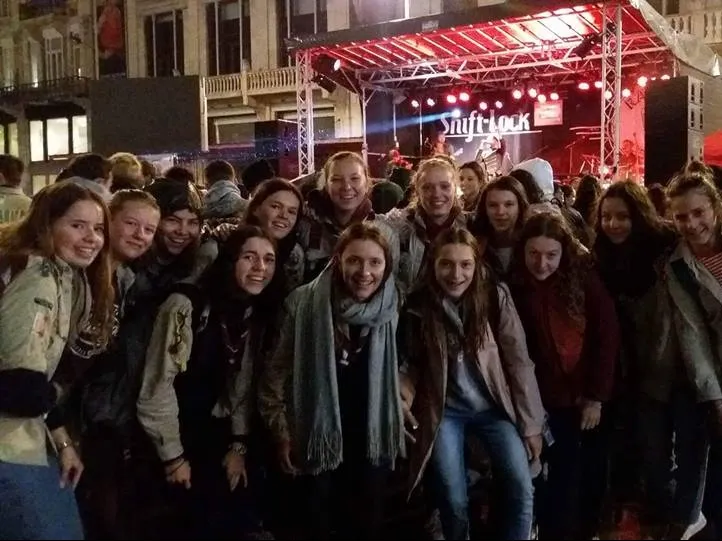

Gidsen
Maatschappelijk engagement en vriendschap. Een groep die haar eigen koers vaart en samen de wereld ontdekt.
Eigen koers, sterke band.
Bij de Gidsen (derde tot en met vijfde middelbaar, meisjes) staat het maatschappelijk engagement centraal. De meisjes bepalen zelf de richting van hun tak en organiseren projecten die verder reiken dan de eigen groep.
Naast klassieke scoutsactiviteiten werken de Gidsen aan sociale projecten, organiseren ze weekenden en hikes, en bouwen ze aan een hechte vriendinnengroep die elkaar door dik en dun steunt. Hier groei je uit tot een sterke, zelfstandige jonge vrouw.
Onze Leiding
Het enthousiaste team dat de Gidsen begeleidt.


Klaar om je eigen koers te varen?
Schrijf je dochter vandaag nog in of kom eens proberen tijdens een van onze vergaderingen.